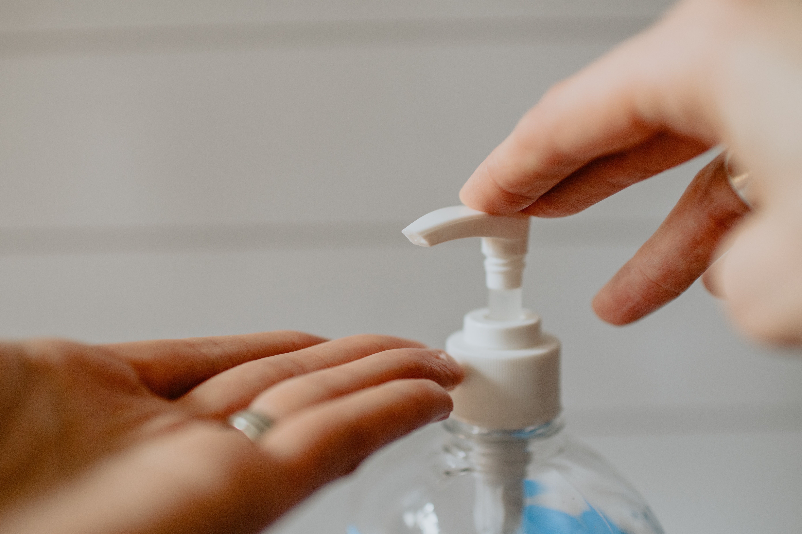
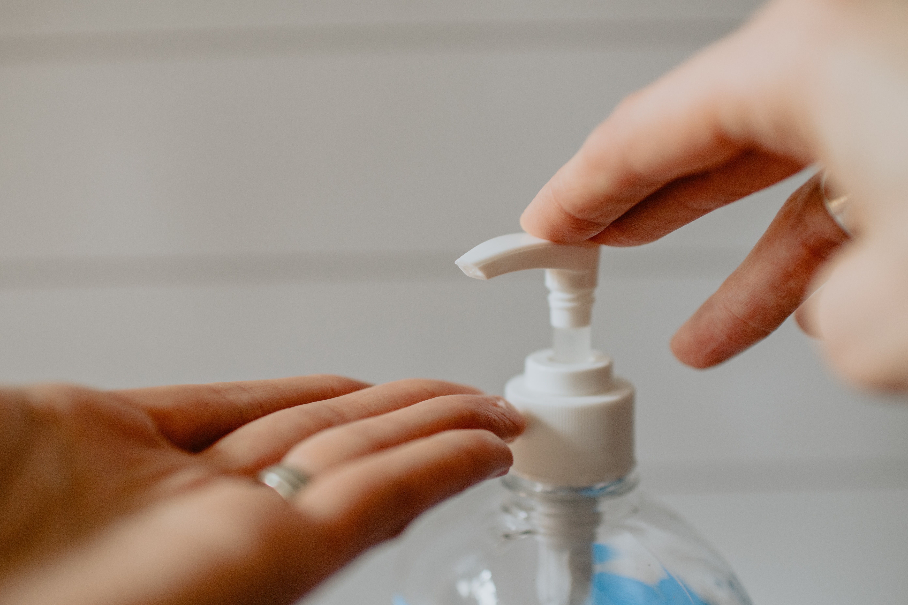

Maintaining a Healthy Lifestyle
Physical fitness is not the sole basis of being healthy; being healthy means being mentally and emotionally fit. Being healthy should be part of your overall lifestyle. Living a healthy lifestyle can help prevent chronic diseases and long-term illnesses. Feeling good about yourself and taking care of your health are important for your self-esteem and self-image. Maintain a healthy lifestyle by doing what is right for your body.
Power of Attitude
A positive attitude can boost your energy, heighten your inner strength, inspire others, and garner the fortitude to meet difficult challenges.
Learn moreExercise & Physical Therapy
Advice on aerobic, flexibility, strength training and balance exercises to help manage and reduce PN symptoms.
Learn moreNutrition
Good nutrition is often the first line of defense to avoid many diseases, including peripheral neuropathy. Find advice for keeping a healthy diet, shopping and managing drug side effects.
Learn moreSelf-Care & Coping Skills
Advice for daily care of your physical needs and managing the stress of dealing with peripheral neuropathy.
Learn moreAssistive Devices
A sampling of the products available to help you remain as independent as possible, and maintain your own safety when living with a physical disability.
Learn moreCaregiver Tips
Tips for being a caregiver and needing a caregiver for yourself or a loved one.
Learn moreIf you want to be a well-rounded, healthy individual, here are a couple of staying healthy tips that may help you do just that:
Maintain a regular exercise routine:
No, you do not have to force yourself into intense workouts at the gym but you need to keep as active as possible. You can stick to easy floor exercises, swimming, walking, or simply keep yourself moving by doing some household chores. Do what your body allows you to do.
What is important is that you continue exercising. Give at least twenty to thirty minutes a day to exercise at least three to five times a week. Have a routine; see to it that you have enough physical activity each day.
Be conscious in your diet:
To maintain a healthy lifestyle, you need to keep eating healthy. Add more fruits and vegetables in your diet and eat less carbohydrates, high sodium and unhealthy fat. Avoid eating junk food and sweets.
Avoid skipping a meal—this will only make your body crave more food the moment you resume eating. Remember to burn more calories than you eat.
Engage in the things you are passionate about:
Every now and then, to keep the stress and the demands of life from taking over, take a break to do something you love doing.
Surround yourself with positive energy:
In order to have a sound mental and emotional state, you must surround yourself with positive energy. Yes, not all problems can be avoided. But it helps to face such obstacles with an optimist outlook. Surround yourself with encouraging friends and people that will provide you with constructive criticism every once in a while to help you improve
Make it a habit to always look at the brighter side of life. Even if you find yourself in the worst situation, there is always an upside to it—something good and positive. Dwell on these things instead.
Maintaining a healthy lifestyle is not that difficult, nor does it require a lot of work. Just keep doing what you do and apply the staying healthy tips listed above—surely you will be a well-rounded individual in no time.